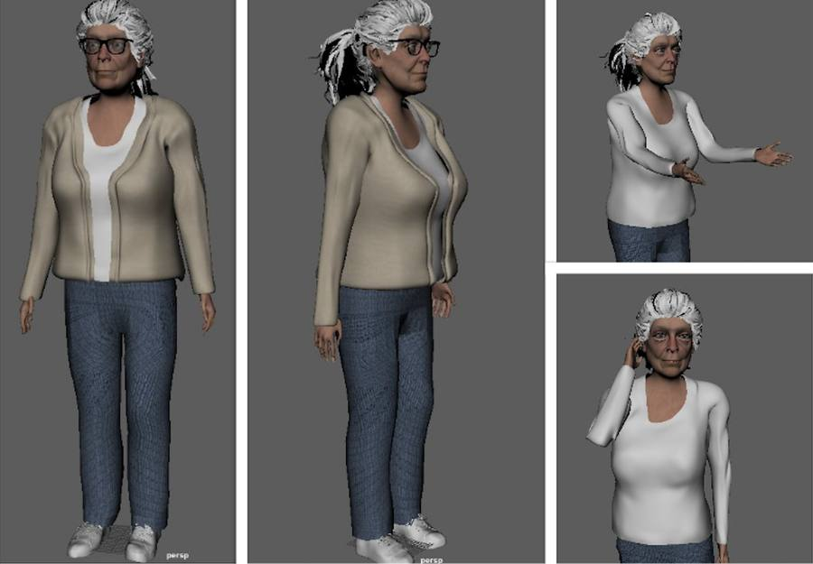
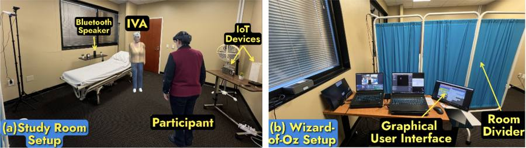

Publications · ACM IVA 2024
Aware Intelligent Virtual Agent’s Effect on Social Presence and Empathy of Caregivers
Proceedings of the 24th ACM International Conference on Intelligent Virtual Agents (IVA ’24), Glasgow, 16–19 September 2024, pp. 1–5.
If a virtual patient remembers your name and notices the room around her, do caregivers feel more present with her, and more empathetic? This pilot measured both, before and after, with the same sixteen people.
Part of the project Embodied Virtual Human Simulation for Caregiver Training

At a glance
- Participants16Nursing backgrounds, within-subjects
- Conditions2Unaware agent, then aware agent
- Empathy instrument20 itemsJefferson scale, 7-point, pre & post
- Social presence36 itemsNetworked Minds, 6 dimensions, 6-point
The two things being measured
Both are established instruments, administered around the interactions rather than during them.
- Empathy
Jefferson Scale of Empathy
Twenty questions on a 7-point Likert scale, completed before the first scenario and after the second — so it brackets the whole session.
- Social presence
Networked Minds measure
Thirty-six questions across six dimensions, completed after each scenario, so the unaware and aware agents can be compared directly.
How the session ran
A room set up as a geriatric care facility: a bed, side tables, a remote-controlled lamp and radio, and a partition hiding the operator. Conditions were deliberately not counterbalanced: showing the aware agent first risked nursing participants reading the unaware agent as a dementia patient.
Pre-test
Demographics, then the Jefferson empathy questionnaire.
Unaware agent (U-IVA)
Participants introduce themselves and converse; the agent shows no awareness of the room or of them.
Aware agent (A-IVA)
The agent recognises them by name from session one, comments on their outfit colour, and manipulates the lamp and radio.
Post-test
Social presence after each scenario; empathy again at the end.
What the pilot found
The paper reports preliminary, directional results: increases in scores rather than test statistics.
- Headline
Empathy and social presence both rose
Scores on both instruments increased after participants had interacted with the unaware and then the aware agent.
- Nuance
The six social-presence dimensions moved unevenly
Four of the six showed increased post-test scores; the paper reports the findings as “more varied” across dimensions.
The six dimensions of social presence
- Increased post-test
Attention
↑ higher after the interactions
- Increased post-test
Perceived affective understanding
↑ higher after the interactions
- Increased post-test
Perceived emotional interdependence
↑ higher after the interactions
- Increased post-test
Perceived behavioural interdependence
↑ higher after the interactions
- Not reported as increased
Co-presence
— no increase reported
- Not reported as increased
Perceived message understanding
— no increase reported
Figures from the paper

Where it goes next
Takeaway
A virtual patient that simply appears to be aware, through a hidden operator rather than any AI, is enough to move caregivers’ reported empathy and sense of being with another person.
Named limitations: a small sample, an imbalanced gender distribution that reflects the nursing population, a limited set of pre-recorded responses, and by-design non-counterbalanced conditions.
The stated next step is replacing the Wizard-of-Oz operator with a large language model, which would widen the conversational range and remove the cost of a human operator.